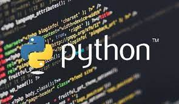
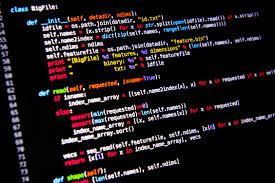
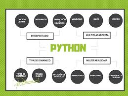

¿Que es Python?
Python es un lenguaje de programación ampliamente utilizado en las aplicaciones web, el desarrollo de software, la ciencia
de datos y el machine learning (ML). Los desarrolladores utilizan Python porque es eficiente y fácil de aprender, además
de que se puede ejecutar en muchas plataformas diferentes.



Los desarrolladores pueden leer y comprender fácilmente los programas de Python debido a su sintaxis básica similar a la del
inglés.
Python permite que los desarrolladores sean más productivos, ya que pueden escribir un programa de Python con menos líneas de
código en comparación con muchos otros lenguajes.
Python cuenta con una gran biblioteca estándar que contiene códigos reutilizables para casi cualquier tarea. De esta manera,
los desarrolladores no tienen que escribir el código desde cero.
Los desarrolladores pueden utilizar Python fácilmente con otros lenguajes de programación conocidos, como Java, C y C++.
La comunidad activa de Python incluye millones de desarrolladores alrededor del mundo que prestan su apoyo. Si se presenta un
problema, puede obtener soporte rápido de la comunidad.
Hay muchos recursos útiles disponibles en Internet si desea aprender Python. Por ejemplo, puede encontrar con facilidad videos,
tutoriales, documentación y guías para desarrolladores.
Python se puede trasladar a través de diferentes sistemas operativos de computadora, como Windows, macOS, Linux y Unix.